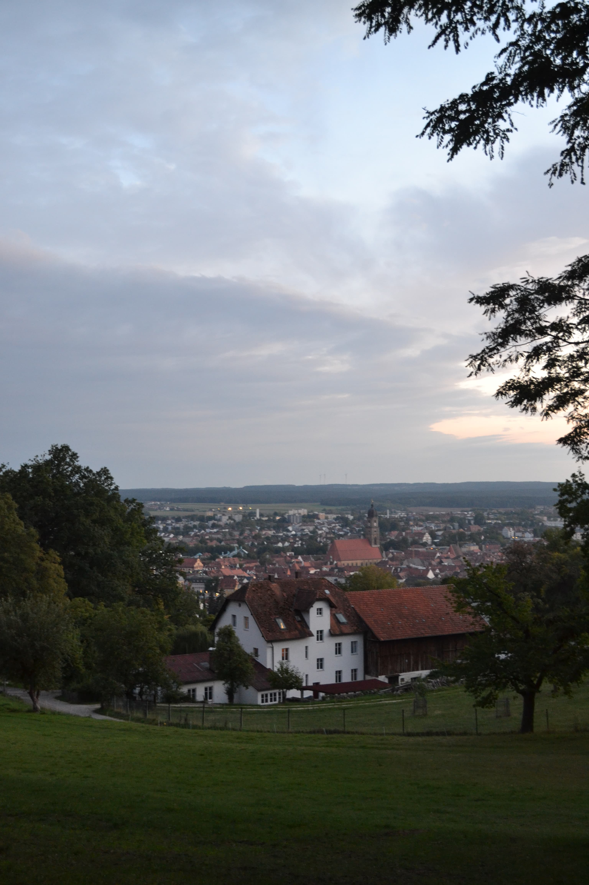
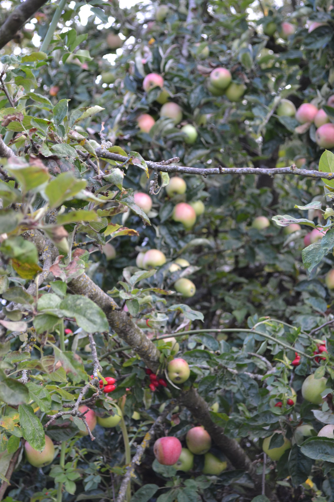
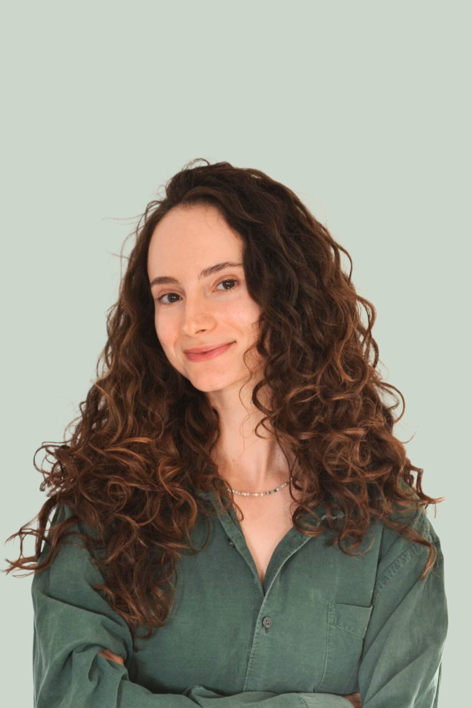
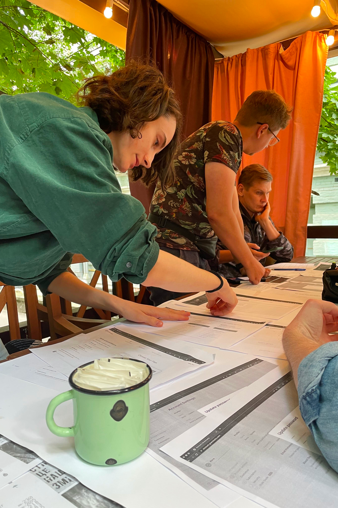

Career Timeline
2020
MA in Literary and Comparative Studies
Freelancing as an Illustrator, Graphic and Web Designer
2021
6-month UX/UI Design Bootcamp
While taking other courses in Design Theory, Web Design etc.
2023 — Now
Freelancing and Consulting
Developing Independent Projects
Hobbies & Interests
In my spare time, I enjoy exploring psychology, learning French, reading, drawing, traveling, exploring museums (favorites include Fundació Joan Miró, Centre Pompidou and the Musée des beaux-arts de Montréal), and fermenting vegetables.



